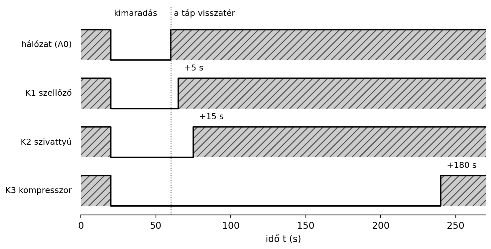
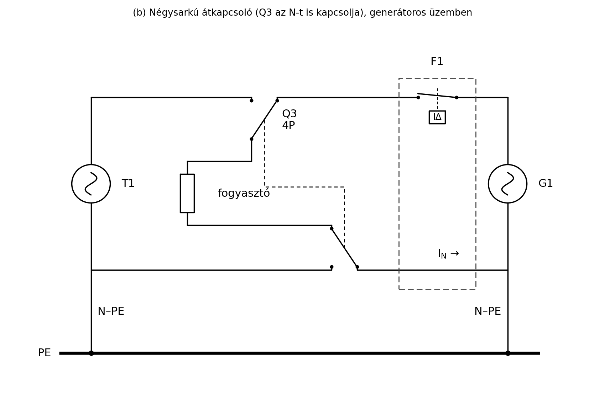

![Felvonó- és állandó üzemű fogyasztó elosztó elvi vázlata (egyvonalas) - Egyvonalas elvi vázlat (a fővonal a 3 fázist, illetve az egyfázisú ágakban az L-t és N-t jelzi). Q3 automatikus átkapcsoló (ATS, váltóérintkezős jellel): alapállásban a hálózati ágat kapcsolja a gyűjtősínre, hálózatkiesés után a tartalék (generátor/UPS) ágat; egyszerre csak az egyik forrás csatlakozhat, így a két forrás sosem kapcsolódik párhuzamosan. Q1 a lakatolható felvonó-főkapcsoló: csak a hajtást (Q11) és a vezérlést (Q12) kapcsolja, a PE-t nem; a fülke-/aknavilágítás, a dugalj (Q13, Q21) és a gépházvilágítás (Q14) a főkapcsolótól függetlenül, közvetlenül a gyűjtősínről kap tápot, hogy kikapcsolt főkapcsolónál is legyen világítás a karbantartáshoz. A 30 mA-es RCD-k a fülke-/aknavilágítás és a karbantartási dugalj (Q21), illetve a gépházvilágítás (Q22) ágában vannak. A készülékértékek szemléltetők; a tényleges kivitel a szabvány (MSZ EN 81-20), a gyártói előírás és a jogosult tervező terve szerint (ellenőrizendő).](assets/ve129-diagram-1.png)
Egy ipari csarnokban a felvonó nem egyszerűen egy „nagyobb fogyasztó”, hanem olyan berendezés, amelynek kiesése mozgáskorlátozottak, anyagmozgatás vagy üzemszerű működés esetén azonnali termeléskiesést okozhat. Ugyanez igaz egy szerverterem vagy hűtőház villamos elosztójára: ha a betáp megszakad, nem elég „majd visszajön az áram”, mert az adatvesztés vagy a hűtőlánc megszakadása visszafordíthatatlan kár. A felvonó- és állandó üzemű fogyasztók elosztóit ezért nem elegendő egy hagyományos lakáselosztó logikájával méretezni: itt a redundancia, a tartalék betáp, a szelektivitás és a karbantarthatóság együtt döntik el, hogy a berendezés valóban akkor működik-e, amikor szükség van rá.
Ebben az alfejezetben a felvonó villamos elosztójának követelményeit, majd az állandó üzemű fogyasztók (szerver, hűtés, biztonságtechnika) elosztóinak sajátosságait vesszük végig. A hangsúly a szerelő szempontján van: milyen áramkört, védelmet, jelölést és karbantartási gyakorlatot kell kialakítani.
Képzeljünk el egy felvonó elosztószekrényét a gépházban. A felvonó önálló leágazásáról egy külön elosztó kap tápot. A lakatolható főkapcsoló a hajtómotort és a vezérlést kapcsolja; a fülke-, akna- és gépházvilágítás és a karbantartási dugalj a főkapcsolótól függetlenül, saját védelmen át kap tápot, hogy lekapcsolt főkapcsolónál is legyen világítás (ellenőrizendő: MSZ EN 81-20). A tartalék betápot – ha van – egy automatikus átkapcsoló kapcsolja a hálózat kiesésekor.
Az ábrán a felvonó motor külön leágazáson kap tápot. A dugalj és a világítás FI-relén keresztül csatlakozik, míg a motoráramkörnél a motor jellegéből adódóan nem feltétlenül használunk 30 mA-es FI-t; ezt a következő szakaszban pontosítjuk. A tartalék betáp (generátor vagy UPS) a reteszelt Q3 átkapcsolón át csatlakozik: a gyűjtősínt vagy a hálózat, vagy a tartalék forrás táplálja, a kettő soha nem párhuzamosan; így a kritikus fogyasztók hálózatkieséskor is működnek.
A felvonó villamos berendezése nem csak a motor: a vezérlés, a biztonsági áramkör, a fülkevilágítás, a gépházvilágítás, a szellőzés és a hívórendszer is ide tartozik. A felvonóra vonatkozó követelményeket a felvonó-szabvány (Magyarországon az MSZ EN 81 sorozat; az aktuális kiadás ellenőrizendő) és az építési, tűzvédelmi, munkavédelmi előírások közösen határozzák meg.
Szabvány. A felvonó villamos berendezésére és elosztójára vonatkozó követelményeket elsősorban az MSZ EN 81 sorozat (felvonók biztonsági előírásai) és az MSZ HD 60364 kisfeszültségű villamos berendezésekre vonatkozó szabvány tartalmazza. A felvonó-szabvány a gépház, az akna, a fülke és a vezérlőberendezés villamos követelményeit is rögzíti; a részletes áramköri és szerelési megoldásokat a gyártói dokumentáció és a hatósági előírások pontosítják. (ellenőrizendő: az aktuális szabványszám és kiadás)
Meghatározás. A felvonó-elosztó a felvonó-berendezés céljára kialakított, elkülönített villamos elosztó, amely a hálózati betáptól a motor, a vezérlés, a fülkevilágítás és a gépházi segédáramkörök megtáplálásáig terjed. A felvonó áramköre a többi fogyasztótól legalább szelektív túláramvédelemmel elkülönített leágazáson kap tápot.
A felvonóelosztó jellemző követelményei:
Külön betáp és külön főkapcsoló. A felvonót rendszerint önálló leágazáson kell táplálni. A főkapcsolónak zárhatónak vagy lelakatolhatónak kell lennie, és egyértelműen jelölni kell, hogy az a felvonóhoz tartozik. A főkapcsoló minden aktív vezetőt (a fázisokat és – ahol a leválasztás megköveteli – a nullavezetőt) bontson, kikapcsolt állapotban lelakatolható legyen. A védővezetőt (PE) és a PEN-vezetőt kapcsolni tilos. (ellenőrizendő: MSZ EN 81-20, MSZ HD 60364-4-46, -5-54)
Túláram- és hibavédelem. A motoráramkört a motor névleges áramához és indítási áramához illesztett kismegszakítóval vagy motorvédő kapcsolóval kell védeni. A motor rövidzárlati védelmére B vagy C kioldási karakterisztikájú kismegszakító a gyakorlatban sokszor nem elegendő a nagy indítási áram miatt, ezért gyakran D karakterisztikájú megszakítót vagy motorvédő kapcsolót alkalmaznak. A vezérlési áramköröket külön, kis névleges áramú megszakítókkal kell védeni. A dugaszolóaljzatok (köztük a karbantartási dugalj) áramköreit 30 mA-es áram-védőkapcsolóval kell ellátni (ellenőrizendő: MSZ HD 60364-4-41, MSZ EN 81-20); a fülke- és vészvilágítást a gyártói előírás szerint.
FI-relé használata a motoráramkörben. A felvonó hajtómotorja általában ipari frekvenciaváltóról vagy hálózati feszültségű motorról üzemel. A motor és a frekvenciaváltó üzemszerűen keltette szivárgási árama miatt a 30 mA-es FI-relé használata a motor főáramkörében gyakran téves kioldást okozhat. Ezért a motoráramkört általában nem 30 mA-es FI-relével, hanem hibavédelmi célú, nagyobb (pl. 300 mA) vagy szelektív FI-relével, illetve a hálózati rendszerhez illesztett egyéb hibavédelmi megoldással kell védeni. A végleges megoldást a gyártói előírás és a szabvány határozza meg. (ellenőrizendő: az aktuális szabvány követelményei)
Biztonsági áramkörök. A felvonó biztonsági lánca (ajtóretesz, sebességhatároló, ütköző, stb.) a felvonó-szabvány szerint önálló, felügyelt áramkör, amelynek megszakadása azonnali leállítást és hibajelzést eredményez. A biztonsági lánc a felvonóvezérlés része; táplálását és bekötését a felvonó gyártója/szerelője a szabvány szerint alakítja ki, a villanyszerelő a vezérlés számára külön (a motorétól független) védett leágazást biztosít (ellenőrizendő: MSZ EN 81-20 vonatkozó szakaszai).
Akna- és gépházvilágítás, dugalj. A karbantartási munkákhoz külön világítási és dugaljkört kell kialakítani. Az aknában és a gépházban a karbantartási dugaljnak 30 mA-es FI-védelemmel kell rendelkeznie, mert a munkavégzés helyszíne nedves, szűk, földelt felületekkel határolt.
Jelölés és dokumentáció. A felvonóelosztóban minden áramkört azonosítani kell: „felvonó motor”, „vezérlés”, „fülkevilágítás”, „gépházvilágítás”, „dugalj”, „tartalék betáp”. A kapcsolási rajzot a szekrényben kell elhelyezni. A felvonó átadásakor az elosztó feliratozását ellenőrizni kell.
Definíció. Az állandó üzemű fogyasztó olyan berendezés vagy rendszer, amelynek üzeme folyamatos, illetve amelynek kiesése üzemzavart, adatvesztést vagy biztonsági kockázatot okoz. Ilyenek a szerverek, a hűtőházak, a klímaközpontok, a biztonságtechnikai rendszerek, a kommunikációs csomópontok.
Az ilyen fogyasztók elosztóinál nem elegendő a hagyományos, egyszeres betáplálás. A következő szempontokat kell figyelembe venni:
Redundancia. Legalább két, egymástól független villamos betáplálást kell biztosítani: az egyik a közcélú hálózat, a másik lehet tartalék generátor, szünetmentes áramforrás (UPS) vagy másik transzformátor. A két betáplálás közötti átkapcsolást automatikus átkapcsoló (ATS – Automatic Transfer Switch) végzi. Az ATS-nek reteszeltnek kell lennie, hogy a két forrás soha ne kapcsolódjon párhuzamosan.
Szünetmentes ellátás (UPS). A szerverek és a biztonságtechnika nem tűrik a hálózatkimaradást. A UPS olyan akkumulátoros berendezés, amely a hálózat kiesésekor inverterrel táplálja a fogyasztókat. A UPS-nek magának is védett áramkört kell kapnia, és a kimenő oldalát külön elosztóval, FI-védelemmel és szelektív kismegszakítókkal kell kialakítani.
Tartalék betáp. A tartalék generátor indítása, terhelésre kapcsolása és leállítása automatikus rendszerrel történik. A felvonó, a hűtőkompresszor, a szerverterem klímája csak akkor van ellátva, ha a tartalék betáp rendelkezésre áll. A tartalék betáp áramkörét úgy kell méretezni, hogy a kritikus fogyasztók teljes terhelését elbírja.
Karbantartási megkerülő áramkör. A tartalék betáp és a UPS karbantartásához gyakran beépítenek kézi megkerülő kapcsolót, amellyel a fogyasztók ellátása megszakítás nélkül közvetlenül a hálózatra kapcsolható, így a UPS (tartalék berendezés) a fogyasztóktól és a hálózattól leválasztható, és biztonságosan javítható.
Ha egy hűtőház vagy klímaközpont tápja kimarad, majd visszatér, a motorok egyszerre indulnának. Az indítási áramok összeadódnak: a betáp védelme kiold, aggregátoros üzemben pedig a feszültség letörik, és a generátor le is állhat. A hűtőkompresszornak ráadásul minimális állásidőre van szüksége (pl. 3–5 perc, amíg a hűtőkörben a nyomás kiegyenlítődik; ellenőrizendő: gyártói adat), különben nagy ellennyomás ellen indulna, és a motorvédő kiold vagy a kompresszor károsodik. A megoldás a lépcsőzetes újraindítás bekapcsolás-késleltetett időrelékkel.
![Lépcsőzetes újraindítás bekapcsolás-késleltetett időrelékkel - Vezérlőkör alapállapotban: L → F10 vezérlőköri védelem → A0 hálózat-/fázisfigyelő relé záróérintkezője (zár, ha mindhárom fázis jelen van és a fázissorrend helyes) → KT1 (5 s), KT2 (15 s), KT3 (180 s) bekapcsolás-késleltetett időrelé tekercse párhuzamosan. KT1 késleltetett záró → F1 95-96 → K1 (szellőző); KT2 → F2 95-96 → K2 (szivattyú); KT3 → F3 95-96 → K3 (kompresszor). Kimaradáskor az A0 bont, minden időrelé alaphelyzetbe áll; a táp visszatérésekor a késleltetések újraindulnak. Szemléltető idők; a kompresszor állásideje gyártói adat (ellenőrizendő).](assets/ve129-diagram-2.png)
Az időrelék egyszerre kapnak feszültséget, de különböző késleltetéssel zárják az érintkezőjüket; az eredményt az alábbi idődiagram mutatja.

A felvonó és az állandó üzemű fogyasztók elosztóiban a védelmi eszközök kiválasztásánál a következő szabályokat kell érvényesíteni:
Szelektivitás. A hibahelyhez legközelebbi védelmi eszköznek kell kioldania, a felette lévőnek bekapcsolva kell maradnia. Ezért a főmegszakító és a leágazó kismegszakítók között energia-szelektivitást kell tervezni. A gyakorlatban a gyártók táblázatokat adnak meg a szelektivitási párokról; ezeket a tényleges kiválasztásnál ellenőrizni kell.
FI-relé kiválasztása. Állandó üzemű fogyasztók (szerver, hűtés) esetén a 30 mA-es FI-relé elsősorban a dugalj- és világítási áramkörökhöz szükséges. A szerver tápegységek miatti szivárgási áramok miatt azonban a nagyobb, 300 mA vagy 1 A-es FI-reléket és a szelektív FI-reléket gyakran alkalmazzák a főelosztó szintjén. A szivárgási áramok összegződhetnek, ezért az RCD mögé csak annyi fogyasztót kössünk, hogy az áramkör üzemszerű szivárgóárama (védővezető-árama) ne haladja meg az kb. 30 %-át (30 mA-es RCD-nél kb. 10 mA; ellenőrizendő: MSZ HD 60364-5-53, gyártói ajánlás), mert az RCD már a névleges érték felénél is kioldhat.
Háromsarkú vagy négysarkú átkapcsoló? Generátoros tartaléknál gyakori helyszíni hibajelenség, hogy egy RCD csak generátoros üzemben old ki. Az alábbi két elvi rajz (egy fázis + N + PE, egyszerűsítve) megmutatja, miért. Az (a) rajzon kövesd végig az N-áram két útját a fogyasztótól a generátor csillagpontjáig!
![(a) Háromsarkú átkapcsoló (Q3 csak az L-t kapcsolja), generátoros üzemben - Működtetett állapot: Q3 generátor-állásban, F1 bekapcsolva. Elvi ábra; a földelési koncepció tervezői feladat (ellenőrizendő: MSZ HD 60364-5-55/-5-56, gyártói ajánlás). T1 transzformátor csillagpontja N–PE kötéssel (PEN-szétválasztás a főelosztóban), G1 generátor saját N–PE kötéssel; a Q3 csak az L-t váltja, az N közös. Az F1 áram-védőkapcsoló a generátor leágazásában az L-t és a rajta átmenő N-t figyeli. A fogyasztó N-árama két úton tér vissza G1 csillagpontjához: I_N1 az N-vezetéken (az F1-en át), I_N2 a T1 N–PE kötésén, a PE-n és a G1 N–PE kötésén át (az F1-et megkerülve). Az F1 az I_N2 különbséget hibaáramnak látja, és kiold.](assets/ve129-diagram-3.png)

Az (a) esetben a fogyasztó N-árama megoszlik: egy része (I_N1) az N-vezetéken át, a másik része (I_N2) a T1 N–PE kötésén és a PE-vezetőn át jut vissza a generátorhoz. Az az áram-védőkapcsoló, amelynek N-ágát ez a PE-út megkerüli (itt a generátor leágazásának F1-e, de ugyanígy a főelosztó bejövő RCD-je is), az I_N2-t hibaáramnak látja, és kiold – miközben a PE-n üzemszerűen áram folyik, ami önmagában is hiba. A (b) esetben a négysarkú átkapcsoló az N-t is bontja, ezért az N-áramnak egyetlen útja van, és a PE áramtalan. (Egy közvetlenül a fogyasztó előtti RCD-t ez a jelenség nem érinti, mert azon az L és a teljes N-áram is átfolyik.)
Kismegszakító karakterisztikák. A felvonó motorja és a frekvenciaváltó indításakor nagy áramlökés van, ezért D karakterisztikájú megszakítót vagy motorvédő kapcsolót használnak. A szerverek tápegységei C karakterisztikát igényelhetnek a bekapcsolási áram miatt. A világítási áramkörök B karakterisztikát kapnak.
Feszültségesés. Az állandó üzemű fogyasztók érzékenyek a feszültségesésre, ezért a vezeték keresztmetszetét a megengedett feszültségesés (pl. 3% a leágazásban) alapján is ellenőrizni kell. Ez a Feszültségesés és a vezeték méretezése alfejezetben tanultak szerint történik.
A felvonóelosztó és az állandó üzemű fogyasztók elosztója nem „szerelt és elfelejtett” berendezés. A következő karbantartási feladatokat kell rendszeresen elvégezni:
Szabvány. A felvonó villamos berendezésére vonatkozó részletes követelményeket az MSZ EN 81 sorozat (felvonók biztonsági előírásai) tartalmazza, beleértve a gépház, az akna és a fülke villamos telepítését, valamint a vezérlési és biztonsági áramkörök kialakítását. A kisfeszültségű berendezés általános követelményeit az MSZ HD 60364 sorozat adja, a túláramvédelemre és a hibavédelemre vonatkozó részekkel. Az állandó üzemű fogyasztók elosztóinál emellett az MSZ EN 61439 (kapcsolóberendezések) és az MSZ EN 60947 (kapcsolókészülékek) követelményeit kell alkalmazni. A szünetmentes ellátásra az MSZ EN 62040 (UPS) és az akkumulátorokra vonatkozó szabványok vonatkoznak. A tűzvédelmi és biztonsági világítási követelményeket a hatályos OTSZ és az MSZ EN 1838 tartalmazza. (ellenőrizendő: a felsorolt szabványok aktuális kiadásai és alkalmazhatóságuk)
Fontos elv: a felvonó szerelése önálló szakma, ezért a felvonó biztonsági áramköreinek kialakítása, a kötések és a behúzások a felvonó-szerelő feladata. A villanyszerelőnek az elosztó kialakítását, a betáplálást, a védelmi eszközöket és a karbantartási áramköröket kell elkészítenie, a felvonó-szerelővel egyeztetve.
Egy raktárcsarnokban a meglévő felvonó elosztójában a fülkevilágítás 10 A-es kismegszakítóval és FI-relé nélkül volt bekötve. A karbantartás során a felvonó-szerelő azt észlelte, hogy a fülkevilágítás vonalában a fázisvezető csupaszodott meg a kábelhúzás miatt, és a fülke fémburkolatához ért. A mérés kimutatta, hogy a fülke fémszerkezetének védővezető-bekötése a függőkábelben megszakadt, ezért a kismegszakító nem oldott le (a hurokimpedancia-feltétel nem teljesült), és a fémrész feszültség alá került. A szerelő a berendezés feszültségmentesítése után helyreállította a PE-folytonosságot, megmérte a folytonosságot és a hurokimpedanciát, és kiegészítő védelemként minden fülke-, akna- és gépházvilágítási, valamint dugaljkört 30 mA-es FI-relével látott el. Tanulság: a hibavédelem alapja a PE-folytonosság és az önműködő lekapcsolás; az FI-relé kiegészítő védelem, amely a motoráramkörnél a szivárgóáram miatt gyakran nem alkalmazható, a karbantartási és világítási köröknél viszont indokolt. (ellenőrizendő: a konkrét eset adatai; a tanulság általános érvényű)
Egy másik gyakori eset: a szerverteremben a szerverállványok bővítése után a kritikus áramkörök 30 mA-es FI-reléi tévesen kioldottak a tápegységek szivárgási áramának összegződése miatt (a szivárgóáram nem függ attól, hogy hálózatról vagy generátorról megy a táplálás; csak generátoros kioldásnál először az N-vezető kapcsolását és az N–PE kötést kell vizsgálni). A megoldás az áramkörök szétválasztása volt: a szervereket nagyobb (300 mA) szelektív FI-relével, a munkavédelmi dugaljakat 30 mA-es FI-relével látták el. A szelektivitás így a téves kioldásokat megszüntette.
FI-relé a motoráramkörben. A felvonó motor vagy frekvenciaváltó szivárgási árama miatt a 30 mA-es FI-relé állandóan kiold. Helyes gyakorlat: a motoráramkört ne 30 mA-es FI-relével, hanem a gyártói ajánlás szerinti hibavédelmi megoldással védjük; a 30 mA-es FI-t a dugalj- és világítási körökhöz használjuk.
Nem szelektív védelem. A főmegszakító és a leágazó kismegszakítók azonos kioldási karakterisztikájúak, ezért hiba esetén a főmegszakító is leold. Helyes gyakorlat: a kiválasztásnál a gyártói szelektivitási táblázatot kell alkalmazni, és lehetőleg a főmegszakítót nagyobb névleges áramúra, késleltetett kioldásúra választani.
A tartalék betáp reteszelésének hiánya. Ha az ATS vagy a kontaktor nincs reteszelve, a két betáplálás párhuzamos kapcsolása rövidzárlatot okoz. Helyes gyakorlat: mechanikus és villamos reteszelést egyaránt kiépíteni.
A karbantartási dugalj FI-védelmének hiánya. Ha a karbantartási dugalj FI-védelme hiányzik, a munkavégzéskor áramütés veszélye áll fenn. A felvonó szabvány a karbantartási dugaljat kifejezetten 30 mA-es FI-védelemmel írja elő.
Gyakorlás: ennek az alfejezetnek a kidolgozott példái, gyakorlatai és megoldással ellátott feladatai az Összefoglaló feladatgyűjtemény villanyszerelő tanulóknak című kötet 35.3 szakaszában találhatók.
A felvonó- és állandó üzemű fogyasztók elosztói speciális követelményeket támasztanak. A felvonó elosztója külön betáplálást, zárható főkapcsolót, szelektív túláramvédelmet és a motor, vezérlés, világítás, dugalj áramkörök elkülönítését igényli. A motoráramkört általában D karakterisztikájú megszakítóval vagy motorvédő kapcsolóval, a világítási és dugaljköröket B karakterisztikával és 30 mA-es FI-relével kell ellátni; a biztonsági áramkört a felvonó-szerelő köti. Az állandó üzemű fogyasztóknál redundáns betáplálás, automatikus átkapcsoló, UPS vagy tartalék generátor szükséges; a szelektivitás és a szivárgási áramok miatt a FI-relék kiválasztása kritikus. Az üzemeltetés része a rendszeres ellenőrzés, a FI-teszt és a tartalék betáp próbája. A karbantartás elhanyagolása téves kioldáshoz, sőt áramütéshez vezethet. A következő alfejezetben a vezérlőberendezések informatikai hálózatait és a HMI-t tárgyaljuk, amelyek a felvonó- és állandó üzemű elosztók épületautomatikai csatlakozásaként jelennek meg.
A fejezet az MSZ EN 81 sorozatra (felvonók; ellenőrizendő: MSZ EN 81-20/-50 aktuális kiadása), az MSZ HD 60364 sorozatra, az MSZ EN 61439 és MSZ EN 60947 sorozatra, az MSZ EN 62040 (UPS) szabványra, valamint a hatályos OTSZ-re és az MSZ EN 1838-ra támaszkodik, továbbá a felvonó-, UPS- és ATS-gyártók dokumentációira. Minden szabványszám, szakaszszám és határérték: (ellenőrizendő: aktuális kiadás). A példaértékek oktatási célúak, nem helyettesítik a gyártói dokumentációt és a hatósági előírásokat; a felvonó biztonsági áramköreit a felvonó-szerelő alakítja ki.